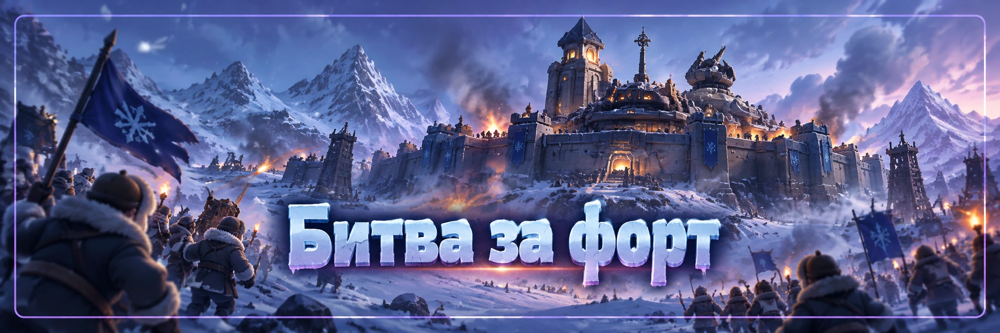

Битва за форт
Автор: SOVA58
Альянсы сражаются за форт или крепость и пытаются удержать объект.
🏰 Победа: 30 минут непрерывного удержания или контроль объекта в момент окончания 2-часового боя.
👥 Основная атака идёт сборами.
🛡 После захвата сразу заполняем гарнизон.
📋 Регистрация
На битву альянс заранее регистрируют R4/R5. Руководство выбирает объект и три предпочтительных варианта времени; окончательное время определяет сервер.
В обычной еженедельной схеме можно подать заявку на 1 новый форт и 1 новую крепость. Ранее удержанные объекты могут автоматически добавляться к защите. Важно: при самом первом участии официальная RU-справка указывает возможность выбрать только один объект. Проверяйте доступные заявки в текущем событии.
⚔️ Как атакуем
Если объект пустой, заходим сразу.
Если внутри противник:
- 🔥 создаём сбор;
- 🦸 лидер ставит сильнейших героев;
- 👥 остальные вступают правильными героями поддержки;
- ⏱ при необходимости рассчитываем время марша так, чтобы несколько сборов прибыли почти одновременно, даже если стартуют в разное время.
Хаотичные одиночные атаки обычно только сливают войска.
🦸 Герои в сбор
Для вступления в чужой сбор первым героем часто используют:
Джесси • Джассер • Со-Юн — доступные ранние варианты. В 4-м поколении стоит проверить Рейну, а с появлением следующих поколений — Гвен, Бредли, Магнуса, Бланшетт, Руфуса и Хервор, если эти герои уже доступны и их первый навык Экспедиции развит.
Какие именно усиления: Джесси и Джассер — наносимый урон всех войск (+25% на максимуме); Со-Юн, Бредли, Магнус и Руфус — атаку (+25%); Рейна — урон обычных атак (+30%); Гвен — получаемый противником урон (+25%); Бланшетт и Хервор — смертоносность (+25%). Это разные характеристики, поэтому нельзя складывать все проценты в одну «силу сбора».
Не все первые навыки постоянные: у Уэйна дополнительная атака срабатывает раз в несколько ходов, у Рене дополнительный урон связан с меткой и копейщиками. Их пользу оценивайте по составу марша и отчётам, а не только по большому числу в описании.
Для атаки они полезны первыми экспедиционными навыками. Из участников в бою учитываются до четырёх первых экспедиционных навыков героев первого слота. По игровым руководствам, навыки более высокого уровня вытесняют низкие; при равенстве уровня приоритет у тех, кто вступил раньше. Если четыре неподходящих навыка 5-го уровня уже заняли места, новые навыки того же уровня их не вытеснят. Повторять героя разрешено, но лучше согласовать разные полезные усиления и проверить жёлтый флаг со списком активных навыков. Лидер сбора использует навыки всей своей тройки. Для обороны гарнизона выбирайте навыки выживаемости и защиты, а не копируйте атакующий набор без проверки.
💾 Подготовка построений перед штурмом
Сохраняйте отдельные шаблоны для атакующего сбора и защитного подкрепления: первый герой нужен разный. В шаблоне участника атаки слева ставьте героя с согласованным атакующим первым навыком Экспедиции, а в оборонительном шаблоне — с защитным. Перед отправкой проверяйте портрет первого героя, доступность войск, вместимость и выбранное соотношение.
Сохранённый шаблон не означает автоматический выбор: для PvP-сборов выбирайте его при ручной отправке. Автовступление в рейды на Полярный ужас — отдельный режим и не заменяет координацию капитанов при штурме форта.
🛡️ После захвата
Самая частая ошибка: захватили и расслабились.
- 🪖 сразу заполняем гарнизон;
- 🔄 возвращаем выбитые марши;
- 👥 добавляем подкрепление;
- 📢 следим за следующим сбором противника.
Победа начинается не с захвата, а с удержания.
Как работают бонусы гарнизона: общие характеристики защиты берутся от участника с наибольшими бонусами. Дополнительно учитываются четыре первых экспедиционных навыка героев других защитников. Не считайте, что характеристики всех подкреплений складываются.
Первый герой в защитном подкреплении: для ранних поколений удобны Патрик («Сверхпитательность»: до +25% здоровья всех войск) и Сергей («Ребро защиты»: до −20% получаемого войсками урона). Если их нет или они заняты, смотрите защитные первые навыки Бахити, Лин Сюэ и Лумака Бокана. Это варианты для подкреплений, а не универсальная тройка героев главного защитника.
Согласуйте четыре навыка: назначьте подходящих первых героев заранее и проверьте их уровни. Более высокий уровень неподходящего навыка может вытеснить нужный защитный бонус; одинаковые уровни могут зависеть от порядка входа. Для штурма используйте отдельный атакующий набор.
Порядок пополнения: игра выбирает войска сначала по уровню (от высшего), а при равном уровне — пехоту, затем копейщиков и стрелков. Следите за фактическим составом гарнизона после пополнения.
🪖 Соотношение войск в защите
Нет обязательной для всех пропорции. Пехота стоит впереди и принимает основной удар; копейщики находятся в среднем ряду, стрелки — сзади. Для первых испытаний можно взять 60% пехоты / 20% копейщиков / 20% стрелков. Если передняя линия быстро заканчивается, сравните отчёты с вариантом 70 / 10 / 20. Другие составы могут оказаться лучше из-за навыков героев, уровней войск и соперника.
Не переносите сюда построение для Медведя: его задача — максимальный урон, а задача гарнизона — выдержать атаки и сохранить боеспособность. После каждой волны проверяйте оставшуюся пехоту и фактический состав подкреплений: при пополнении игра отдаёт приоритет войскам высокого уровня, затем пехоте, копейщикам и стрелкам. В бою следуйте указаниям R4/R5, а числа подбирайте по отчётам.
🏥 Лечение
Следим за ранеными. Лучше лечить небольшими партиями и использовать помощь альянса.
Не допускаем переполнения медпункта во время долгой серии боёв.
🎯 Если противник сильнее
Не разбиваемся по одному о сильный гарнизон.
📢 Назначить капитанов → 👥 наполнить сборы → ⏱ рассчитать прибытие → ⚔️ нанести согласованные удары → 🛡 закрепиться
Если одиночный сбор не пробивает сильный гарнизон, можно подвести два или три сбора с минимальным интервалом прибытия, пока противник не успел пополнить защиту. Но результат не гарантирован: учитывайте уровень войск, состав противника и боевые отчёты. Не отправляйте «слабый первый сбор» только ради предполагаемого ослабления.
📍 Позиция игроков
Активным участникам выгодно стоять ближе к форту.
Так быстрее вступать в сборы, возвращать марши, пополнять гарнизон и реагировать на выбивание.
🎁 Награды
Первый захват и итоговое удержание дают разные категории наград. Посмотреть их можно в карточке конкретного форта или крепости.
Часть наград получают участники или альянс автоматически, а распределяемые награды назначает руководство R4/R5. Не путайте первый захват с победой по окончании сражения.
💬 Опыт игроков
- ✅ Не атакуем по одному сильный гарнизон.
- ✅ В сбор вступаем правильным первым героем.
- ✅ После захвата моментально заполняем форт.
- ✅ Следим за ранеными весь бой.
- ✅ Сильнейшие игроки ведут сборы, остальные помогают наполнением и подкреплением.
- ✅ Согласованное прибытие двух сборов может быть эффективнее разрозненных атак, если хватает войск и подходящих капитанов.
🚫 Частые ошибки
- ❌ одиночные атаки;
- ❌ неправильный первый герой в сборе;
- ❌ пустой гарнизон после захвата;
- ❌ медленное пополнение;
- ❌ переполненный медпункт;
- ❌ каждый атакует когда хочет.
✅ Быстрая схема
📢 команда → ⚔️ сбор → 🏰 захват → 🛡 гарнизон → 🔄 подкрепления → ⏱ удержание
Главное: форт выигрывается не первой атакой, а удержанием.